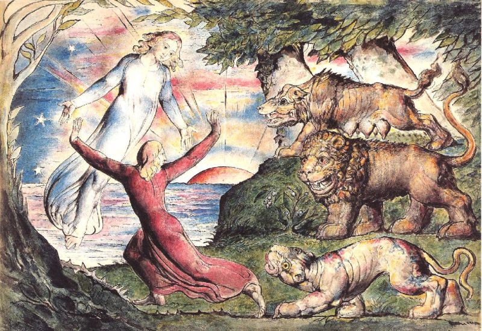

XML/TEI
Mentre ch’i’ rovinava in basso loco,
dinanzi a li occhi mi si fu offerto
chi per lungo silenzio parea fioco.
I commenti di William Blake
Ogni immagine realizzata da Blake è accompagnata da una spiegazione scritta e da un audio registrato nel 1812 in cui l'artista traduce Dante per meglio realizzare la sua opera.
Per approfondire
Metadati descrittivi
| Autore | William Blake |
|---|---|
| Data | 1824 |
| Soggetto | Inferno, Canto I |
| Scena rappresentata | Mentre Dante fugge dalle tre Fiere (la lupa, il leone e la lonza), appare Virgilio. |
| Tecnica | Acquerello |
| Versi rappresentati | Vv. 1-90 |
| Colore | A colori |
| Committente | John Linnell |
| Luogo di conservazione | National Gallery of Victoria, Melbourne, Australia |
| Riferimenti | https://www.tate.org.uk/art/artists/william-blake-39/blake-illustrations-dante |
| Controllo di autorità |